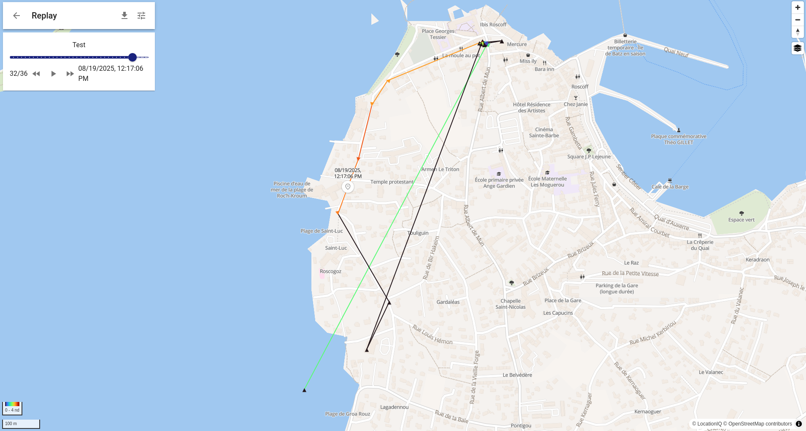

library(DBI)
library(RMySQL)
# Connexion
con <- dbConnect(RMySQL::MySQL(),
host = "127.0.0.1",
port = 3307,
dbname = "traccar",
username = "user_db_name",
password = "user_db_passwd")
# Exemples de requêtes
devices <- dbGetQuery(con, "SELECT * FROM tc_devices")
positions <- dbGetQuery(con, "SELECT * FROM tc_positions")
# Fermer connexion
dbDisconnect(con)Traccar
Collecting GPS records (almost) for free
GPS tracking, presentation of the traccar based solution
Traccar is an open-source GPS tracking platform. It allows you to track vehicles, people, or any GPS-enabled device in real time. It comes with a web User Interface to view devices on a map and can integrate a large number of GPS tracking devices.
It works with:
- a GPS device (can be a smartphone) that sends location data to the Traccar server.
- a server that stores data in a database (e.g., an OVH server).
- a web app and APIs that allow you to visualize, analyze, or forward that data.
We first provide a tutorial to test the Traccar system (a demo provided by the developers). Then, we describe the main steps to build your own tracking system (setting up the server, connecting devices, and extracting the data from the database).
Demo of the Traccar system
First, download the Traccar client application and follow the installation steps.
By default, it should be connected to a demo server (http://demo.traccar.org) and have a specific device identifier.
You can connect to the server via this same link and add a system device (click the + symbol on the top of the left bar).
To connect your system device, you must enter your identifier in the Traccar client app in the identifier box.

From the client app, send your location. This should now be visible on the Traccar Manager.
⚠️ Note: There are several demo servers. If one server is not working properly (e.g., you cannot connect your device to it), try another one. Here is the list of demo servers.
You can follow your own track through time by clicking the replay button.

Build your own Traccar system on OVH servers
Setting up the OVH server
First, subscribe to an OVH account for a Virtual Private Server (VPS). Choose an Ubuntu 24.04 distribution.
It is required to create an ssh authentification key. For the first login, you will need a temporary password, created for the first connection an send by email by OVH.
As Traccar relies on MySQL and we want to be able to administrate the MySQL Database, we first need to install the so-called LAMP stack:
- Linux
- Apache
- MySQL
- phpMyAdmin
Step 1: Install and configure Apache and MySQL
sudo su -
apt update && apt upgrade -y && apt install apache2 -y
systemctl start apache2
systemctl enable apache2
apt install mysql-server -y
systemctl start mysql
systemctl enable mysql
mysql_secure_installationChoose security level 1 (medium) and configure the root password.
Typical configuration:
Please enter 0 = LOW, 1 = MEDIUM and 2 = STRONG: 1
Remove anonymous users? (y|Y for Yes, any other key for No): y
Disallow root login remotely? (y|Y for Yes, any other key for No): No
Remove test database and access to it? (y|Y for Yes, any other key for No): n
Reload privilege tables now? (y|Y for Yes, any other key for No): yBy default, there is no root password. Let’s create one manually:
mysql -u rootALTER USER 'root'@'localhost' IDENTIFIED WITH mysql_native_password BY 'enter_your_root_password';Step 2: Install PHP and phpMyAdmin
This not mandatory for traccar but is helpful to explore the database.
apt install php libapache2-mod-php php-mysql php-mbstring php-zip php-gd php-json php-curl -y
apt install phpmyadmin -yDuring installation, choose: - Apache - Do not configure the phpmyadmin database automatically
Step 3: Create the phpMyAdmin database and user
mysql -u root -pCREATE DATABASE phpmyadmin;
CREATE USER 'phpmyadmin'@'localhost' IDENTIFIED WITH mysql_native_password BY 'enter_phpmyadmin_password';
GRANT ALL PRIVILEGES ON phpmyadmin.* TO 'phpmyadmin'@'localhost';
FLUSH PRIVILEGES;
EXIT;Import phpMyAdmin tables
mysql -u root -p phpmyadmin < /usr/share/phpmyadmin/sql/create_tables.sqlEdit the configuration file
nano /etc/phpmyadmin/config-db.php<?php
$dbuser='phpmyadmin';
$dbpass='enter_phpmyadmin_password';
$basepath='';
$dbname='phpmyadmin';
$dbserver='localhost';
$dbport='3306';
$dbtype='mysql';
?>You can now access phpMyAdmin at:
üëâ http://your-server-ip/phpmyadmin with your root or phpmyadmin credentials.
Installing Traccar
Step 1: Prepare MySQL for Traccar
The Traccar installer temporarily uses root/root. We need to relax password restrictions:
SET GLOBAL validate_password.LENGTH = 4;
SET GLOBAL validate_password.policy = 0;
SET GLOBAL validate_password.mixed_case_count = 0;
SET GLOBAL validate_password.number_count = 0;
SET GLOBAL validate_password.special_char_count = 0;
SET GLOBAL validate_password.check_user_name = 0;
ALTER USER 'root'@'localhost' IDENTIFIED BY 'root';
GRANT ALL ON *.* TO 'root'@'localhost' WITH GRANT OPTION;
CREATE USER 'traccar'@'localhost' IDENTIFIED WITH mysql_native_password BY 'enter_traccar_password';
CREATE DATABASE traccar;
GRANT ALL PRIVILEGES ON traccar.* TO 'traccar'@'localhost';
FLUSH PRIVILEGES;
EXIT;Step 2: Install Traccar
wget https://www.traccar.org/download/traccar-linux-64-latest.zip
apt install unzip
unzip traccar-linux-*.zip
./traccar.runStep 3: Configure Traccar
nano /opt/traccar/conf/traccar.xml<?xml version="1.0" encoding="UTF-8"?>
<!DOCTYPE properties SYSTEM 'http://java.sun.com/dtd/properties.dtd'>
<properties>
<entry key='database.driver'>com.mysql.cj.jdbc.Driver</entry>
<entry key='database.url'>jdbc:mysql://localhost/traccar?zeroDateTimeBehavior=round&serverTimezone=UTC&allowPublicKeyRetrieval=true&useSSL=false&allowMultiQueries=true&autoReconnect=true&useUnicode=yes&characterEncoding=UTF-8&sessionVariables=sql_mode=''</entry>
<entry key='database.user'>traccar</entry>
<entry key='database.password'>enter_traccar_password</entry>
</properties>Step 4: Secure MySQL and start Traccar
ALTER USER 'root'@'localhost' IDENTIFIED WITH mysql_native_password BY 'enter_your_root_password';
GRANT ALL PRIVILEGES ON traccar.* TO 'traccar'@'localhost';
FLUSH PRIVILEGES;
EXIT;Verify connection:
mysql -u root -pThen start Traccar:
service traccar startThis last step will fill the database (and creates the diferent tables for the first call)
Securing with Apache and SSL
Create the configuration file:
nano /etc/apache2/sites-available/traccar.conf<VirtualHost *:80>
ServerName your-domain-or-ip
Redirect / https://your-domain-or-ip
</VirtualHost>
<IfModule mod_ssl.c>
<VirtualHost _default_:443>
ServerName your-domain-or-ip
ServerAdmin your_email@example.com
DocumentRoot /var/www/html
ProxyPass /api/socket ws://localhost:8082/api/socket
ProxyPassReverse /api/socket ws://localhost:8082/api/socket
ProxyPass / http://localhost:8082/
ProxyPassReverse / http://localhost:8082/
SSLEngine on
SSLCertificateFile /etc/ssl/certs/ssl-cert-snakeoil.pem
SSLCertificateKeyFile /etc/ssl/private/ssl-cert-snakeoil.key
</VirtualHost>
</IfModule>Install SSL and required modules:
sudo apt-get install ssl-cert
sudo a2enmod ssl proxy_http proxy_wstunnel rewrite
sudo service apache2 restartEnable the site and generate a Let’s Encrypt certificate:
sudo a2dissite 000-default
sudo a2ensite traccar
sudo service apache2 restart
sudo apt install certbot python3-certbot-apache
sudo certbot --apacheThe server mysql is now ready and the database which will be used to record the position data is named traccar.
Setting up the individual device
The traccar client is available on the Apple store and the Google store. Once downladed, there is a few step to set up the client
Enter the server address http://51.91.58.42:5055,
Choose Précision de la localisation : la plus éllevée
Intervalle (secondes) 30
The user has to send the device id to the traccar administrator
On the traccar server, click on the + to add a device and enter the device id.
The traccar app records the position when the traacar app is on. The user click on Envoyer la position to send the recoded positions to the traccar database.
Accès à la base de données tracca
TO access the traccar database, one ption which works is to first create a ssh tunnel which links local port 3307 to remote port 3306 on the server via
ssh -L 3307:localhost:3306 root@51.91.58.42Then you can access to the database via mysql or through the following R script
library(tidyverse)── Attaching core tidyverse packages ──────────────────────── tidyverse 2.0.0 ──
✔ dplyr 1.1.4 ✔ readr 2.1.5
✔ forcats 1.0.1 ✔ stringr 1.5.2
✔ ggplot2 4.0.0 ✔ tibble 3.3.0
✔ lubridate 1.9.4 ✔ tidyr 1.3.1
✔ purrr 1.1.0
── Conflicts ────────────────────────────────────────── tidyverse_conflicts() ──
✖ dplyr::filter() masks stats::filter()
✖ dplyr::lag() masks stats::lag()
ℹ Use the conflicted package (<http://conflicted.r-lib.org/>) to force all conflicts to become errorslibrary(lubridate)
library(sf)Linking to GEOS 3.12.1, GDAL 3.8.4, PROJ 9.4.0; sf_use_s2() is TRUEpositions |> select(id, deviceid, devicetime, latitude,longitude) |> group_by(deviceid) |> count()# A tibble: 3 × 2
# Groups: deviceid [3]
deviceid n
<int> <int>
1 1 62
2 2 1216
3 3 9positions |> select(id, deviceid, devicetime, latitude,longitude) |> ggplot() +aes(x=longitude, y = latitude, col = as.factor(deviceid)) + geom_path() positions |>
mutate(temps = ymd_hms(devicetime)) |>
group_by(deviceid) |>
mutate(elapse_time = temps - lag(temps)) |>
ggplot() + aes(x=as.factor(deviceid), y = elapse_time) + geom_point() Don't know how to automatically pick scale for object of type <difftime>.
Defaulting to continuous.Warning: Removed 3 rows containing missing values or values outside the scale range
(`geom_point()`).